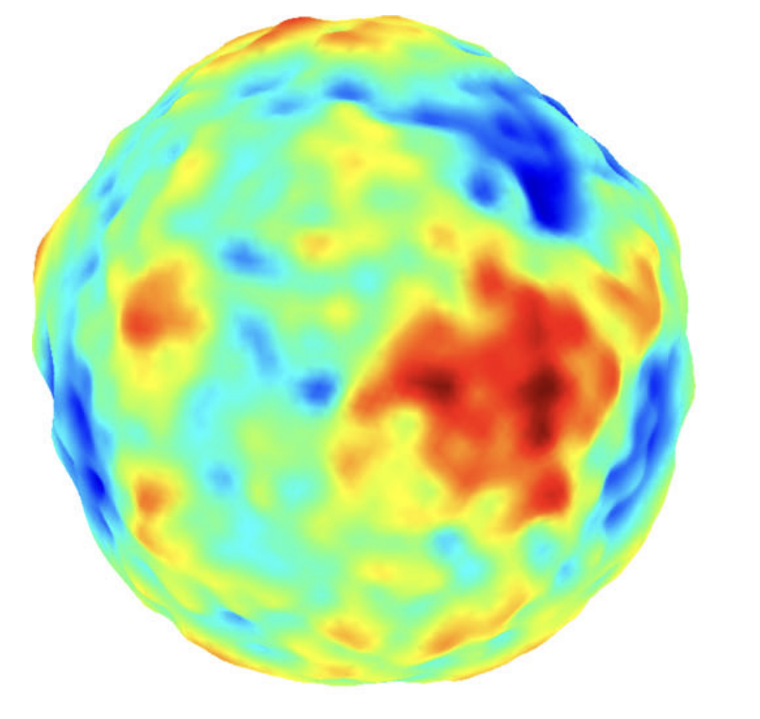
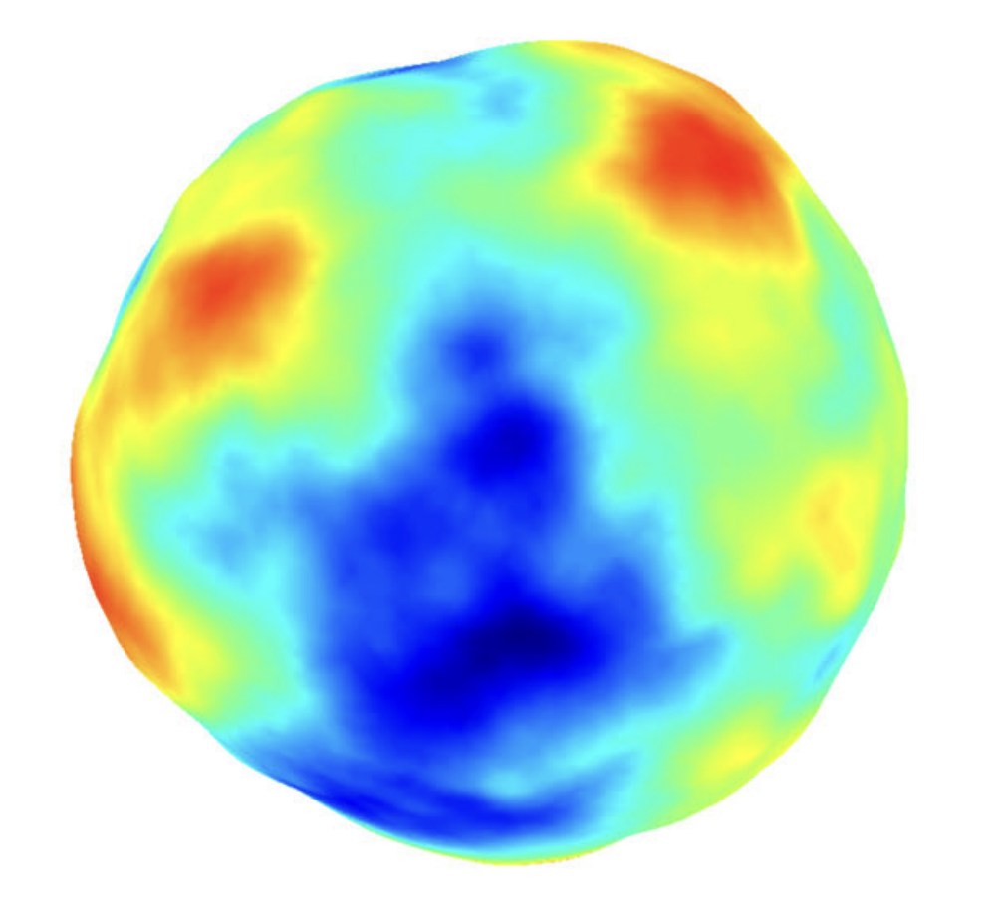
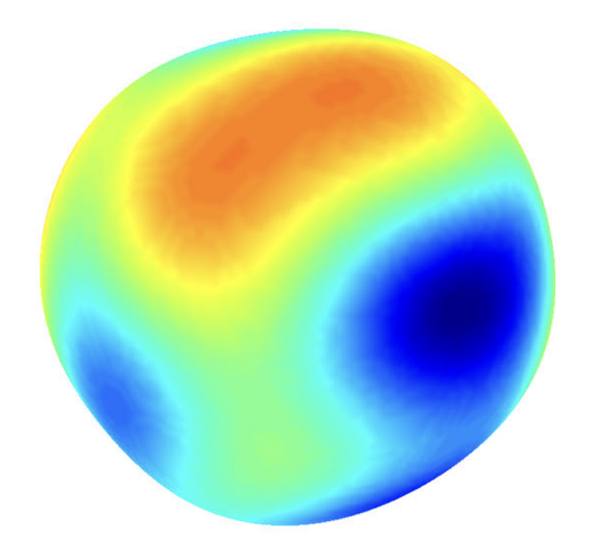
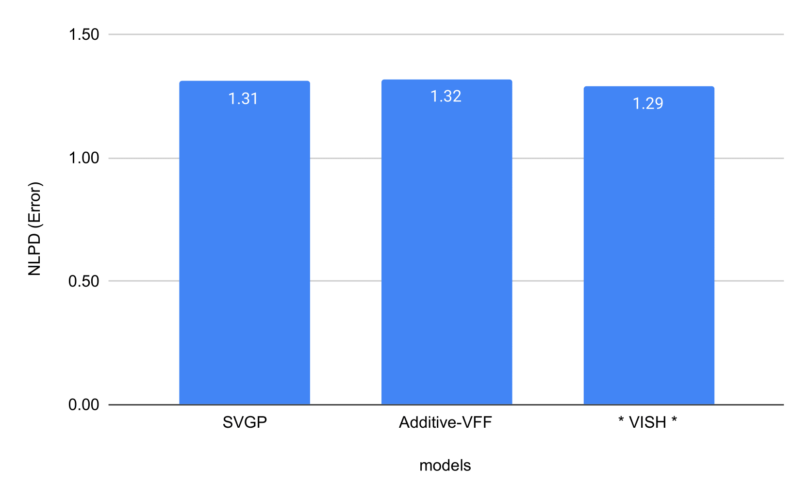
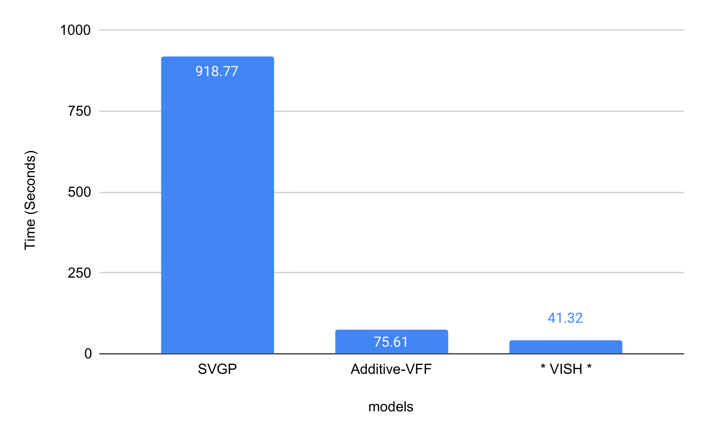

Spectral and Spherical
Gaussian Processes
Gaussian Processes Summer School, 2022

Vincent Dutordoir

Part 1: Spectral
Part 2: Spherical
Spectral Decomposition
$$ \phantom{\int} f(x) = \sum_i \xi_i \cos(\omega_i x) $$
$$ \xi_i = \int f(x) \cos(\omega_i x) \d x $$

Spectral Decomposition
$$ \phantom{\int} f(x) = \sum_i \xi_i \cos(\omega_i x) $$
$$ \xi_i = \int f(x) \cos(\omega_i x) \d x $$
Spectral Decomposition
Spectral Decomposition
Spectral Decomposition
Spectral Decomposition
Let us define a function as $ f(x) = \sum_i \xi_i \phi_i(x) $ where $ \xi_i \~_{i.i.d.} \c{N}(0, \lambda_i). $
$$ \begin{gathered} \htmlData{class=fragment pl-14} { \E[f(x)] } \htmlData{class=fragment} { = \E[\sum_i \xi_i \phi_i(x)] } \\ \htmlData{class=fragment pl-40} { = \sum_i \E[\xi_i] \phi_i(x) } \\ \htmlData{class=fragment} { = 0 } \end{gathered} $$
$$ \begin{gathered} \htmlData{class=fragment pl-16} { \E[f(x) f(x')] } \htmlData{class=fragment} { = \E[\sum_i \xi_i \phi_i(x)\sum_j \xi_j \phi_j(x') ] } \\ \htmlData{class=fragment pl-44} { = \sum_{i,j} \E[\xi_i \xi_j] \phi_i(x)\phi_j(x') } \\ \htmlData{class=fragment pl-28} { = \sum_{i} \lambda_i \phi_i(x)\phi_j(x') } \end{gathered} $$
Degenerate kernels
A finite set of basis functions: $$ \phi_i(x) = \textrm{e}^{-(x-c_i)^2} $$
Leads to a GP: $$ f \~ \c{GP}\Big(0, \sum\nolimits_i \lambda_i \phi_i(x) \phi_i(x')\Big) $$
Mercer Decomposition
Theorem. A positive definite kernels has an orthonormal basis $\{\phi_i(\cdot)\}_{i=0}^\infty$ (eigenfunctions) with a corresponding sequence of eigenvalues $\{\lambda_i\}_{i=0}^\infty$ that are non-negative. Then
$$ k(x, x') = \sum\nolimits_i \lambda_i \phi_i(x) \phi_i(x'). $$
Pros.
• Cheap samples: $$f(x) = \sum\nolimits_i \xi_i \phi_i(x),\ \xi_i \sim \c{N}(0, \lambda_i).$$
• Design efficient approximations of $k$.
• Studying the decay rate $\lambda_i$.
Cons.
• $\lambda_i$'s and $\phi_i(\.)$'s depend on the kernel, space (e.g., $\R^d$, manifolds, etc.) and the measure on the space.
• For many often-used kernels (e.g., Matern, SE) this decomposition is not available.
Example
A non-degenerate kernel with known Mercer decomposition on $\c{S}^1$.
$$ k(\theta, \theta') = \kappa(\theta - \theta') $$
$$ \Phi(\theta) = [\cos(i \theta), \sin(i \theta)]_{i=0}^\infty $$
$$f(\theta) = \sum\nolimits_i \xi_i \phi_i(\theta)$$
🤔 Exercise. Compute the Mercer decomposition (i.e. $\lambda_i$, $\phi_i$) for the first-order arc-cosine kernel $\kappa(\rho) = \pi - \rho$ (Cho and Saul, 2009).
Inducing Variables
An inducing variable is a random variables $\v{u}$ which is MVN with $f(\.)$:
$$ \begin{bmatrix} f(\.) \\ \v{u} \\ \end{bmatrix} \~ \c{N}\Big( \begin{bmatrix} \v{0} \\ \v{0} \\ \end{bmatrix}, \begin{bmatrix} \Cov(f(\.), f(\.)) & \Cov(f(\.), \v{u}) \\ \Cov(\v{u}, f(\.)) & \Cov(\v{u}, \v{u}) \\ \end{bmatrix} \Big) $$
Example.
$$u = f(\v{Z})$$
• $\Cov(f(\.), f(\.)) = k(\.,\.)$
• $\Cov(f(\.), \v{u}) = \Cov(f(\.), f(\v{Z})) = k(\., \v{Z})$
• $\Cov(\v{u}, \v{u}) = \Cov(f(\v{Z}), f(\v{Z})) = k(\v{Z}, \v{Z})$
Spectral Inducing Variables
$$ u_i = f(z_i) \vphantom{\int}$$
$$ \rightarrow \vphantom{\int}$$
$$ u_i = \int f(x) \phi_i(x) \d x $$
• $\Cov(f(\.), f(\.)) = k(\.,\.)$
• $\Cov(f(\.), \v{u}) = \Cov(f(\.), f(\v{Z})) = k(\., \v{Z})$
• $\Cov(\v{u}, \v{u}) = \Cov(f(\v{Z}), f(\v{Z})) = k(\v{Z}, \v{Z})$
• $\Cov(f(\.), f(\.)) = k(\.,\.)$
• $\Cov(f(\.), \v{u}) = \Cov\big(f(\.), \int f(x) \phi_i(x) \d x\Big)$
• $\Cov(\v{u}, \v{u}) = \Cov\Big(\int f(x) \phi_i(x) \d x, \int f(x) \phi_i(x) \d x\Big)$
Part 2: Spherical Gaussian Processes
Why?
$$ \begin{aligned} \htmlClass{fragment}{\textrm{ReLU}(\v{w}^\top \v{x} + b)} & \htmlClass{fragment}{= \textrm{ReLU}\big( \begin{bmatrix} \v{w} \\ b \\ \end{bmatrix}^\top \begin{bmatrix} \v{x} \\ 1 \\ \end{bmatrix} \big)} \\ & \htmlClass{fragment}{= \textrm{ReLU}\big( \vphantom{\int} r_{\tilde{\v{x}}} r_{\tilde{\v{w}}} \cos(\theta_{\tilde{\v{x}}\tilde{\v{w}}}) \big) } \\ & \htmlClass{fragment}{= \vphantom{\int} r_{\tilde{\v{x}}} r_{\tilde{\v{w}}} \textrm{ReLU}\big(\cos(\theta_{\tilde{\v{x}}\tilde{\v{w}}})\big) } \\ \end{aligned} $$

Zonal kernels
• Spherical counterpart of stationary kernels: $k(x, x') = \kappa(x^\top x')$.
• We can compute Mercer's decomposition: $k(x,x') = \sum_i \lambda_i \phi_i(x)\phi_i(x')$.
Spherical Harmonics $\phi$

Spherical Matérn
$$ f(\.) = \sum_{i=0}^\infty \xi_i \phi_i(\.), \htmlClass{fragment}{ \quad\text{with}\quad \xi_i \~_{i.i.d.} \c{N}(0, \lambda_i) } $$
$\nu = 1/2$
$\nu = 3/2$
$\nu = 5/2$
Images: A. Solin, S. Särkkä. Hilbert space methods for reduced-rank Gaussian process regression. Springer Statistics and Computing. 2020.
Reproducing kernel hilbert space
A Hilbert space of functions: $$ \c{H}_k = \Big\{f(\.) = \sum_i \hat{f}_i \phi_i(\.): \|f\|_{\c{H}_k} < \infty \Big\} $$
With inner product: $$ \langle f(\.), g(\.) \rangle_{\c{H}_k} = \sum\nolimits_i \frac{\hat{f}_i\, \hat{g}_i}{\lambda_i} $$
And reproducing property: $$ \langle f(\.), k(\., x) \rangle_{\c{H}_k} = f(x) $$
Spherical Harmonics Inducing Variables
Let's define $$ u_i = \langle f(\.), \phi_i(\. )\rangle_{\c{H}_k} $$
Key quantities:
• $\Cov(f(\.), f(\.)) = k(\.,\.)$
• $ \Cov(f(x), u_i) \htmlClass{fragment}{ = \Cov\big(f(x), \langle f(\.), \phi_i(\. )\rangle_{\c{H}_k} \big) } \htmlClass{fragment}{ = \big\langle \Cov(f(x) f(\.)), \phi_i(\. )\big\rangle_{\c{H}_k} } \htmlClass{fragment}{ = \big\langle k(x, \.), \phi_i(\. )\big\rangle_{\c{H}_k} } \htmlClass{fragment}{ = \phi_i(x) } $
• $ \Cov(u_i, u_j) = \htmlClass{fragment}{ \frac{\delta_{ij}}{\lambda_i} } $
Sparse Approximation
Inducing points: $\v{u} = f(\m{Z})$, and $q(\v{u}) = \c{N}(\v{m}, \m{S})$:
$$ \begin{aligned} q(f) &= \c{GP}\Big( \htmlClass{fragment}{ k(\., \m{Z}) {\m{K}^{-1}_{\m{Z}\m{Z}}} \v{m}; } \htmlClass{fragment}{ \ \ k(\.,\.) - k(\., \m{Z}) \m{K}^{-1}_{ZZ} (\m{K}_{ZZ} - \m{S}) \m{K}^{-1}_{ZZ} k(\m{Z}, \.) } \Big) \\[5mm] & \htmlClass{fragment}{ = \c{GP}(\v{\alpha}^\top k(\v{Z}, \.); \quad \cdots) } \end{aligned} $$
Spherical Harmonic Inducing Variables: $u_i = \langle f(\.),\phi_i(\.) \rangle_{\c{H}_k}$:
$$ q(f) = \c{GP}\Big( \htmlClass{fragment}{\v{\alpha}^\top \Phi(\.);} \htmlClass{fragment}{\ \ \Phi(\.)^\top (\textrm{diag}(\lambda_1, \lambda_2,\ldots) - \m{S}) \Phi(\.)} \Big) $$
Data doens't live on the sphere...
Data doens't live on the sphere...

Experiment
Airline dataset: 6,000,000 datapoints regression task fitted in 40 seconds on a single cheap GTX 1070 GPU
NLPD
Time
Thank you!
J. Hensman, N. Durrande, A. Solin. Variational Fourier Features. Journal of Machine Learning Research. 2018.
A. Solin, S. Särkkä. Hilbert space methods for reduced-rank Gaussian process regression. Springer Statistics and Computing. 2020.
V. Dutordoir, N. Durrande, J. Hensman. Spherical Gaussian Processes. International Conference on Machine Learning, 2020.
V. Dutordoir, J. Hensman, M. van der Wilk, C.H. Ek, Z. Ghahramani, N. Durrande. Deep Neural Networks as Point Estimates for Deep Gaussian Processes.Advances in Neural Information Processing Systems, 2021.
I. Azangulov, A. Smolensky, A. Terenin, V. Borovitskiy. Stationary Kernels and Gaussian Processes on Lie Groups and their Homogeneous Spaces I: the Compact Case. 2022.